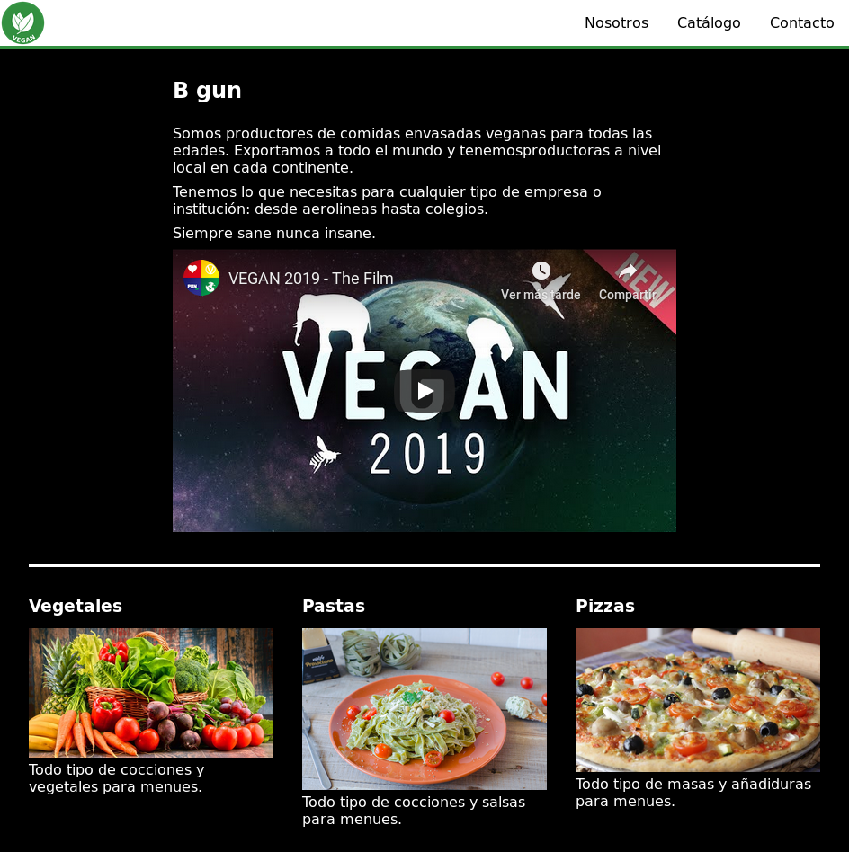
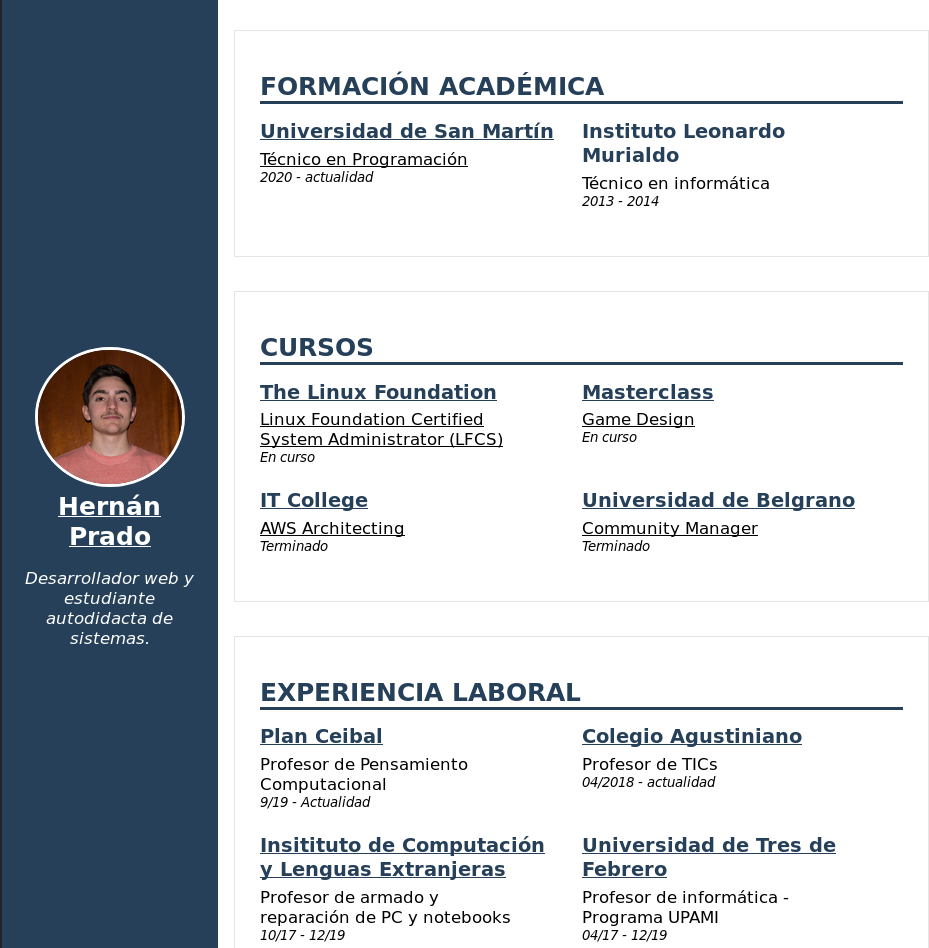
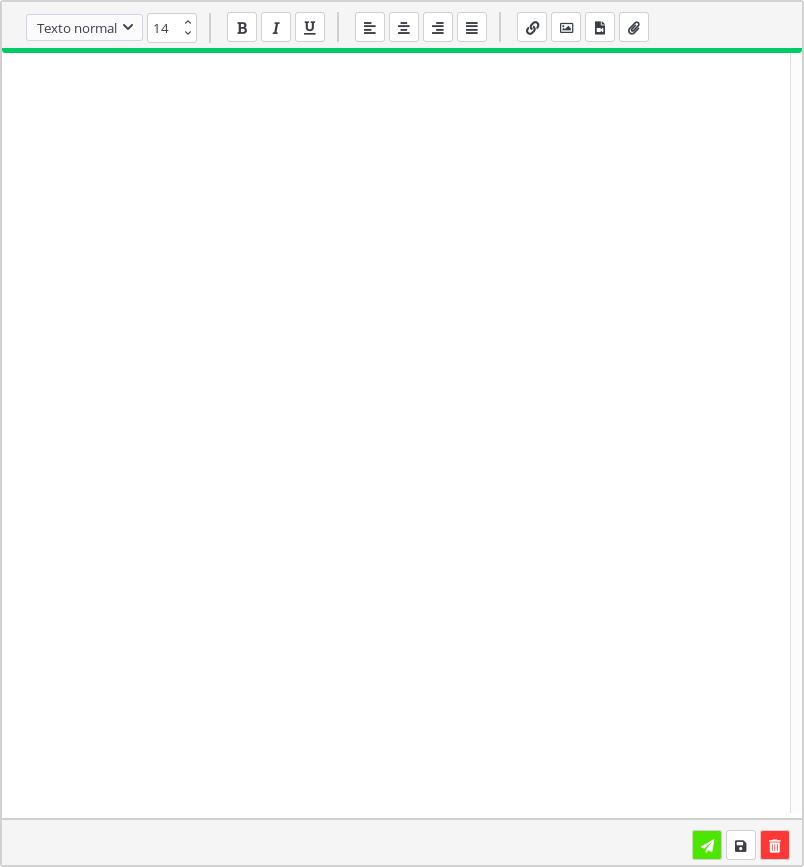
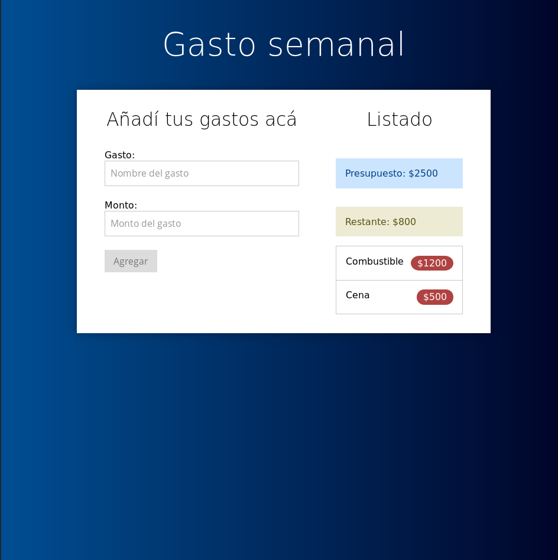
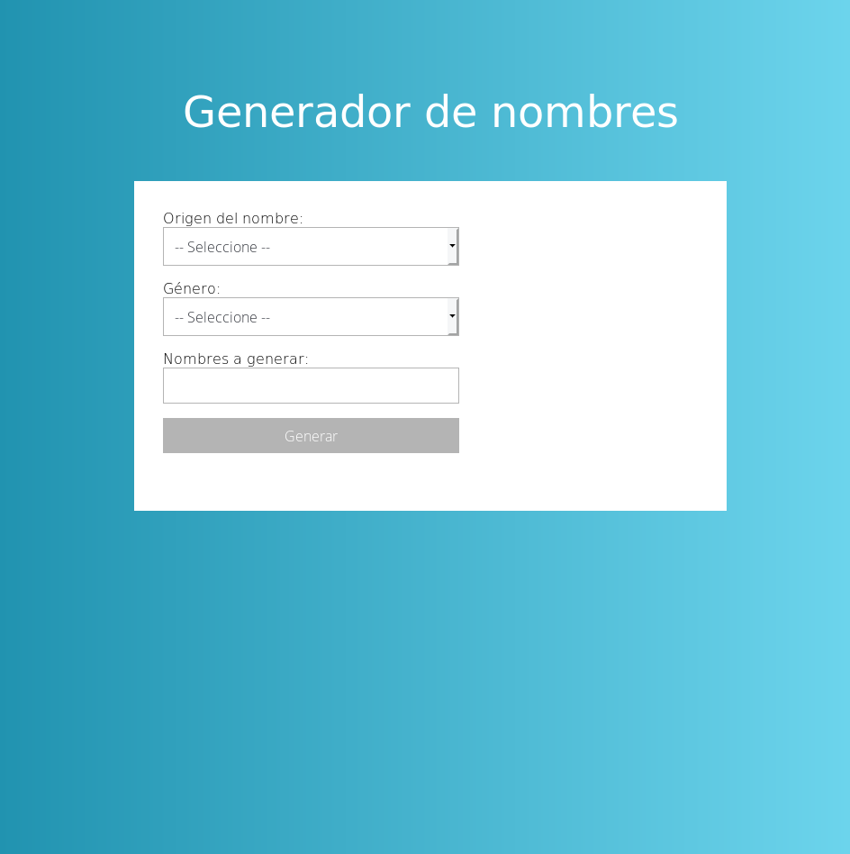
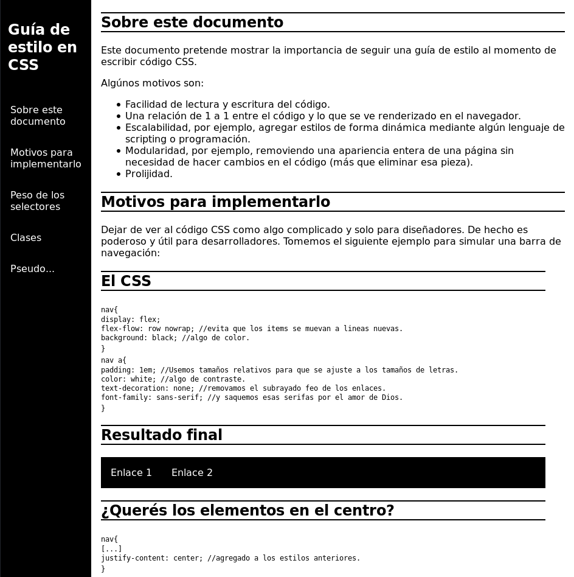
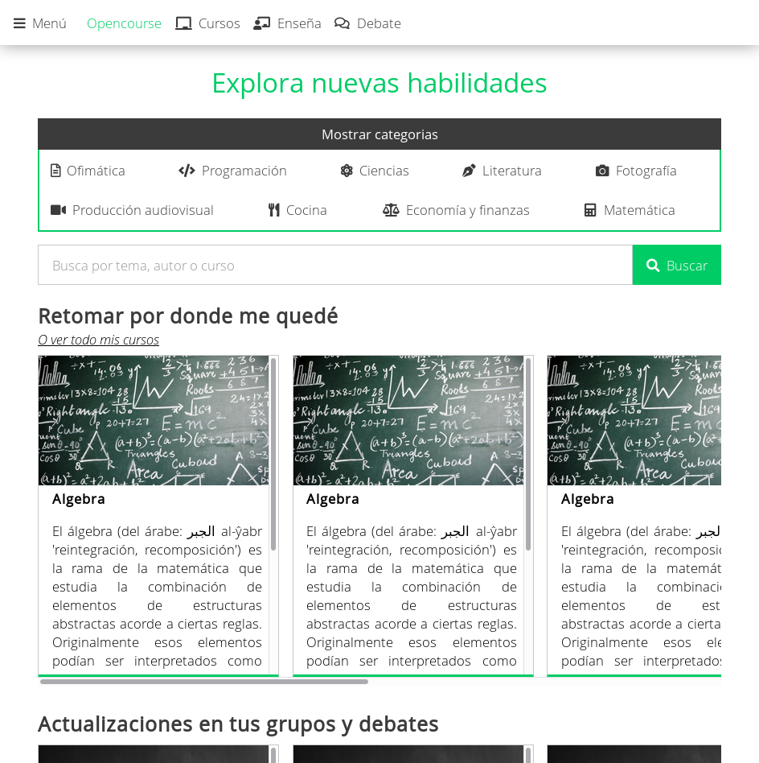
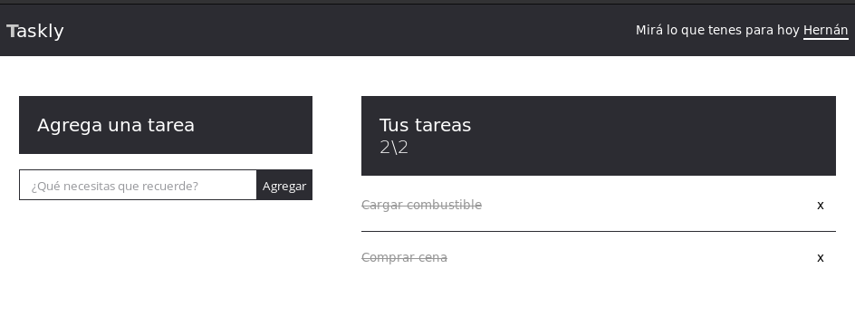
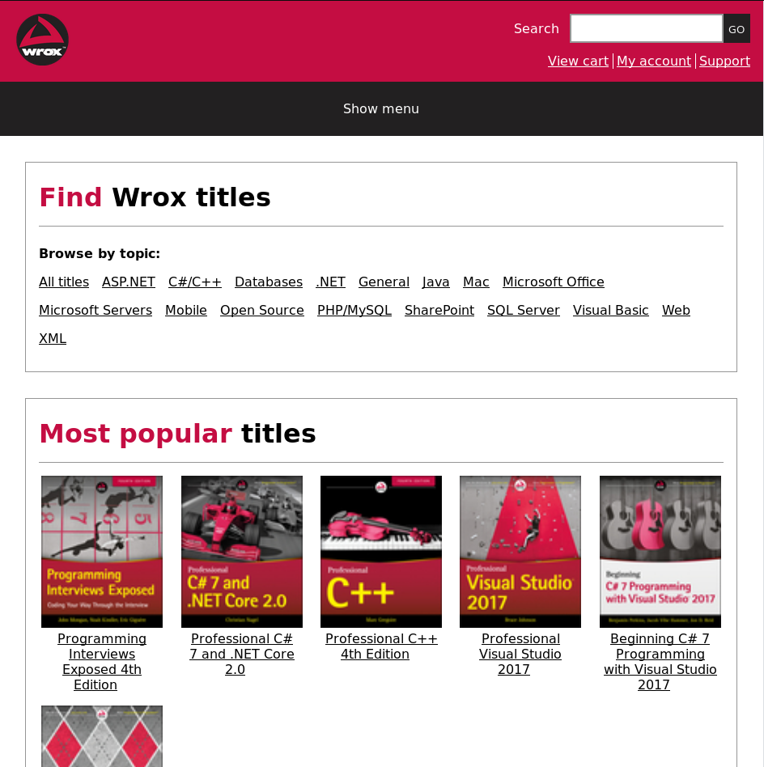
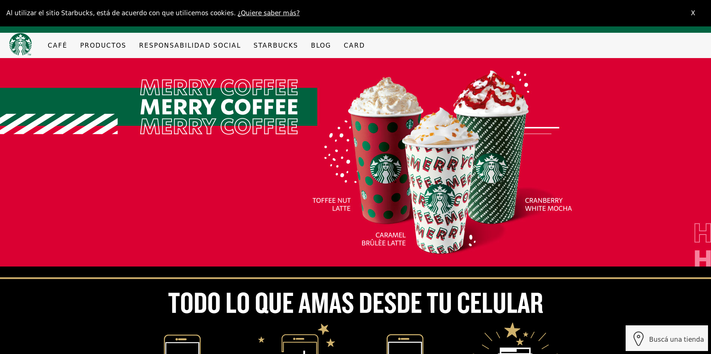

B Gun
Escrito en HTML y CSS (sin librerías ni frameworks)
Es una pequeña página para poner en práctica lo aprendido en Free Code Camp. La consigna consta en crear una página, siguiendo las historias de usuario, para mostrar un producto.
En este proyecto decidí usar grillas y flexbox para la disposición responsiva de cada elemento y que se mantenga la armonía de la página.
Mi CV
Escrito en HTML y CSS (sin librerías ni frameworks)
Estaba un poco cansado de los formatos de CV tradicionales, hoja A4, probablemente columnas, así que decidí sumarme a la movida web y crear una pequeña página mostrando un resumen de mi historial laboral, mis aptitudes técnicas, personales e interpersonales y mis estudios.
Decidí hacer una página simple y modular, el código se puede extender y reutilizar para otros modelos de documentos en los que el contenido se ubique en tarjetas.
Obvio que después cuando llegaron los video CVs quedé desactualizado... de nuevo je.
Editor de Texto
Escrito en HTML, CSS y Javascrpt (sin librerías ni frameworks)
Este proyecto en realidad es una pequeña herramienta que quiero embeber en Opencourse y disponibilizarla bajo una licencia libre para que los desarrolladores puedan embeber un editor de texto sin restricciones a sus webs.
Cuando lo comencé sabía muy poco de Javascript, así que busqué ayuda teniendo la interfaz y algunas funcionalidades hechas. Lamentablemente es difícil encontrar gente que quiera colaborar en un proyecto ad-honorem. No los culpo, nadie vive del aire.
Gasto semanal
Escrito en HTML, CSS y Javascrpt (sin librerías ni frameworks). Utiliza Local Storage
Se trata de un proyecto de un curso de Javascript en el que, el instructor, te brinda la estructura y los estilos del documento y te deja hacer la funcionalidad.
Decidí hacer todo desde cero omitiendo el uso de librerias CSS y así conseguí reducir el peso del proyecto.
Generador de nombres
Escrito en HTML, CSS y Javascrpt (sin librerías ni frameworks)
Dentro del curso que mencionaba antes, uno de los proyectos consiste en obtener nombres consumiendo API a través de fetch API.
De nuevo, la maquetación y los estilos fueron hechos de cero y fué un lindo proyecto para comenzar a trabajar con APIs externas.
¡Adelante, generá el nombre para tu futura bendición!.
Guía de estilo con CSS
Escrito en HTML y CSS (sin librerías ni frameworks)
Otro de los proyectos que propone Free Code Camp es crear una página de documentación. Se me ocurrió llevarlo un poco a otro nivel y redactar una breve, aún así propia, guía de estilo con CSS.
Me concentré en generar un contenido similar al de MDN o W3schools en el sentido de tener el código y el resultado con el que se puede interactuar en vivo.
Te invito a leerla, quizás conozcas algo nuevo sobre CSS.
Opencourse
Escrito en HTML y CSS (sin librerías ni frameworks)
Este quizás es el más ambicioso y demandante de los proyectos que tengo en mente, pero como dicen, una cosa a la vez.
La meta de opencourse no es la de ser un mercado de cursos, sino ser un nexo para profesionales, estudiantes e instructores. Se trata de una plataforma de cursos gratuitos, de código abierto (pueden ser modificados y actualizados) y con espacios para intercambio entre estudiantes.
Como dije antes, una cosa a la vez. Este proyecto demanda conocimiento y tiempo, por el momento le dedico dos días a la semana, uno para redactar contenido y otro para construir la plataforma.
Si estás interesado/a en saber más de Opencourse o de formar parte del proyecto no dudes en contactarme a través de mi perfil en linkedin.
Taskly
Escrito en HTML, CSS y Javascript (sin librerías ni frameworks)
Otro proyecto de aquel curso de Udemy que te mencione. En este caso se trata de un gestor de tareas, pero el proyecto del curso era un poco más simple, así que le fuí y le voy a seguir agregando características.
Lo que se viene en el roadmap es la autenticación. Quiero llevar la aplicación de ser auto-alojada, esto quiere decir que el usuario tiene que encargarse de instalarla y alojarla para tenerla disponible, a disponibilizarla online y así cada persona pueda acceder a sus tareas de cualqier lado. El roadmap sigue pero no vale la pena mencionarlo en este resumen.
Si estás interesado/a en saber más de Opencourse o de formar parte del proyecto no dudes en contactarme a través de mi perfil en linkedin.
Wrox reelaborado
Escrito en HTML, CSS y Javascript (sin librerías ni frameworks). Antes que veas el proyecto, te invito a ver el sitio original.
Comencé a leer libros de este editor (creo que es el editor) sobre programación, bastante buenos. Pero cuando vi la página me llamó demasiado la atención que tengan una versión legacy con tanto contenido sobre programación.
Así que me puse la camiseta y les hice una versión responsiva, simple pero se acerca más a las tendencias de diseño actuales.
Starbucks
Escrito en HTML y CSS (sin librerías ni frameworks)
De nuevo, la intención de este proyecto es mera práctica de maquetado. Traté de calcar la página principal de Starbucks Argentina y mejorar algunos aspectos de la experiencia de usuario.